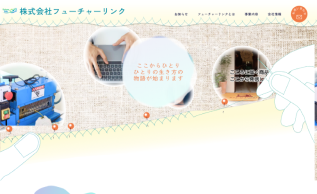
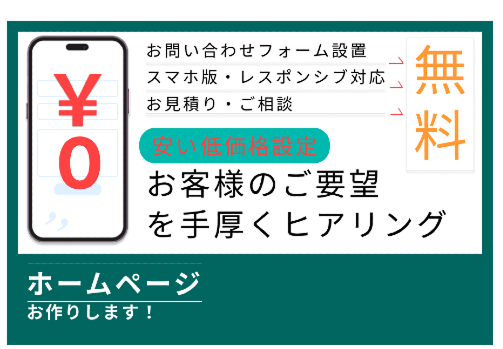
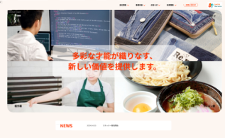
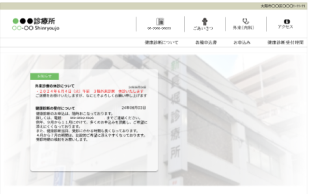
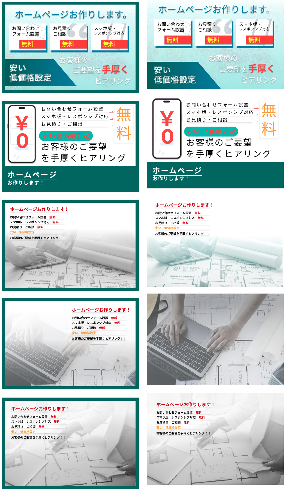
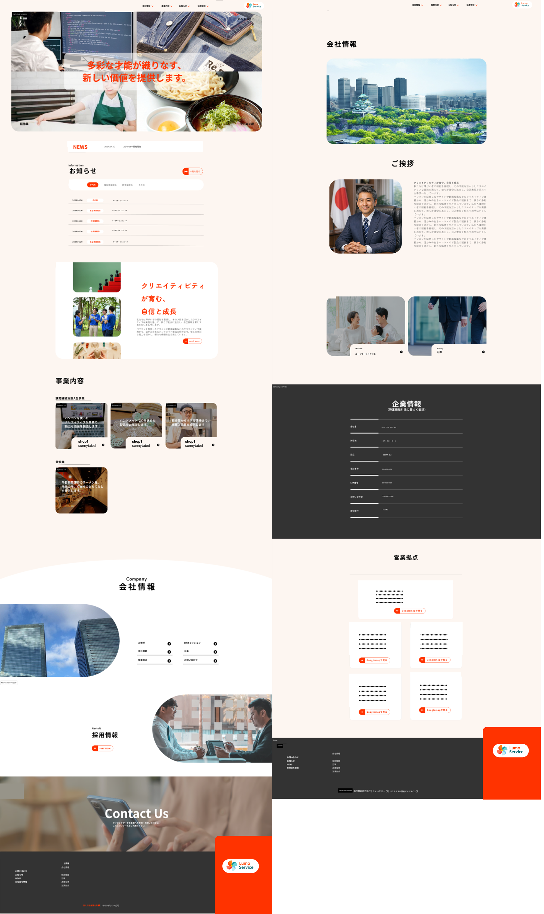
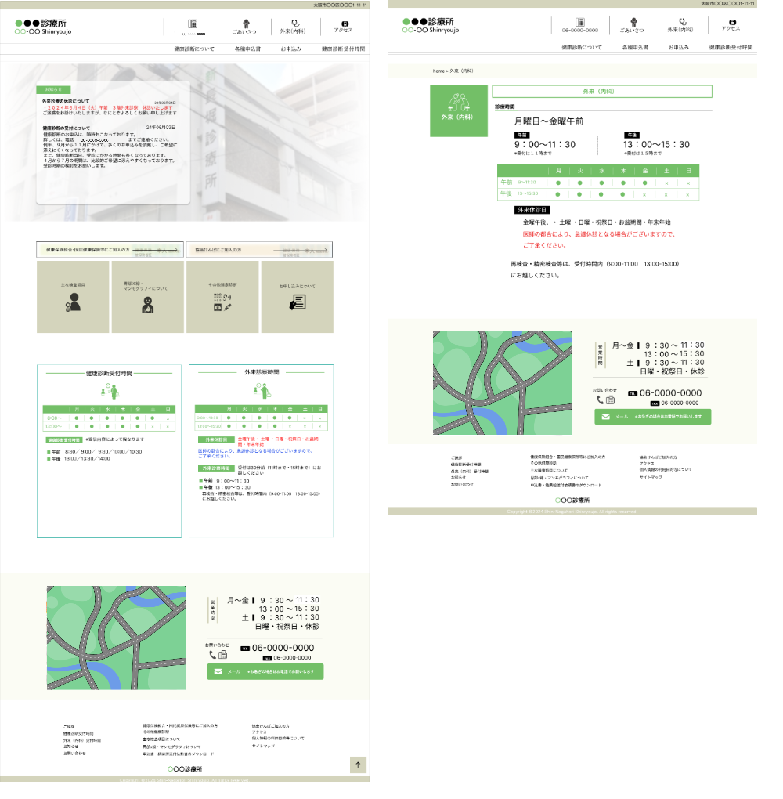

works

作例２
企業サイトLP

作例３
ワードプレスでのサイト制作例

作例４
フィグマによるデザイン、病院サイト
×

作例１ Futurelink 福祉企業サイト
福祉企業サイトを参考に、温かみと親しみやすさを意識したWebサイトを制作しました。 HTML・CSS・JavaScriptを使用してコーディング、デザインをし、動きのあるデザインと視認性の高さを両立しています。 リンク先に作例サイトがございます。レスポンシブ対応も行っています。 デモサイトを見る →＞
作例２ LPデザイン システムサイトトップ画像
システムサイトのトップに表示するＬＰを制作しました。サイトのテーマカラーを参考に、視認性や視線誘導を意識し、緑枠ありとなしのデザインを考えました

作例３ ワードプレス制作 サイトトップ
WordPressを用いたサイト制作例です。ワードプレスにてページの全てをデザインし、トップページにて記事をテーマ別に紹介しています。 ×

作例４ 診療所サイトデザイン topページ外来診療ページ
Figmaを使用して病院サイトのデザインを制作しました。 また、各ページのアイコンはIllustratorで内容に合わせて制作しています。
×